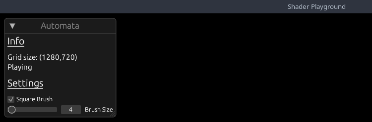

Bevy Game of Life Shader Example Part 5
Square Challenge
Spoiler warning
In the past tutorial, I challenged you to draw a square instead of a circle. Let's see how your implementation compares to mine.
fn draw_particle_square(pos: vec2<f32>, draw_pos: vec2<f32>, size: f32) {
let y_start = draw_pos.y - size / 2.;
let y_end = draw_pos.y + size / 2.;
let x_start = draw_pos.x - size / 2.;
let x_end = draw_pos.x + size / 2.;
if (pos.x >= x_start && pos.x <= x_end && pos.y >= y_start && pos.y <= y_end) {
textureStore(texture, vec2<i32>(pos), vec4<f32>(1.0, 1.0, 1.0, 1.0));
}
}
Quick Renames
If you previous completed part_4, I changed InputState => AutomataParams.
UI
Before we continue with the graphical side of things, let's add some UI to our game. I prefer to use egui in my projects, and there is a wonderful integration crate for bevy bevy_egui. Let's add it to our project.
$
cargo add bevy_egui
Our UI will be pretty simplicstic for now. We will show the base simulation properties, and a couple of overridable properties. We are going to quickly add some new properties that we will use.
pub struct AutomataParams {
pub is_paused: bool, // NEW
pub is_drawing: bool,
pub can_scroll: bool, // NEW
pub use_square_brush: bool, // NEW
pub radius: f32, // NEW
pub mouse_pos: Vec2,
pub prev_mouse_pos: Vec2,
}
impl Default for AutomataParams {
fn default() -> Self {
Self {
is_paused: false, // NEW
can_scroll: true, // NEW
is_drawing: false,
use_square_brush: true, // NEW
radius: 4.0, // NEW
mouse_pos: Vec2::ZERO,
prev_mouse_pos: Vec2::ZERO,
}
}
}Now lets build our UI!
const SPACING: f32 = 10.0;
const TEXT_SIZE: f32 = 15.0;
const HEADING_SIZE: f32 = 20.0;
#[bevy_plugin]
pub fn UIPlugin(app: &mut App) {
app.add_plugin(EguiPlugin).add_system(user_interface); // Remember to add the EguiPlugin
}
/// Give our text a custom size
fn sized_text(ui: &mut Ui, text: impl Into<String>) {
ui.label(
egui::RichText::new(text)
.size(TEXT_SIZE)
.color(egui::Color32::WHITE),
);
}
fn heading(ui: &mut Ui, text: impl Into<String>) {
ui.heading(
egui::RichText::new(text)
.underline()
.size(HEADING_SIZE)
.color(egui::Color32::WHITE),
);
}I am adding a couple of helper methods just to make things easier and reduce the boilerplate I have to write later :D
/// System to generate user interface with egui
pub fn user_interface(
mut contexts: EguiContexts,
mut params: ResMut<AutomataParams>,
) {
egui::Window::new("Automata")
.constrain(true)
.fixed_pos(egui::pos2(10.0, 10.0))
.show(contexts.ctx_mut(), |ui| {
ui.visuals_mut().override_text_color = Some(egui::Color32::WHITE);
heading(ui, "Info");
ui.add_space(SPACING);
sized_text(ui, format!("Grid size: ({},{})", SIM_SIZE.0, SIM_SIZE.1));
sized_text(
ui,
(if params.is_paused {
"Paused"
} else {
"Simulating"
})
.to_string(),
);
ui.add_space(SPACING);
heading(ui, "Settings");
ui.add_space(SPACING);
ui.checkbox(&mut params.use_square_brush, "Square Brush");
ui.add(egui::Slider::new(&mut params.radius, 1.0..=200.0).text("Brush Size"));
});
}
Our Info section will show the size of our grid, and if our simulation is currently running. The Settings section will
allow us to change the brush size and toggle between a square brush or circular brush.
Add the plugin to our main plugin, and run the application. This is how it looks:

Let's hookup these properties to our application so we can actually use them!!
In our update_input_state system, we need to check if Egui is currently being hovered, or capturing the mouse. If so, we need to disable certain inputs
from happening while the UI is active.
pub fn update_input_state(
mut contexts: EguiContexts,
window_query: Query<&Window>,
mut params: ResMut<AutomataParams>,
keyboard_input: Res<Input<KeyCode>>,
camera_q: Query<(&Camera, &GlobalTransform)>,
mut mouse_button_input_events: EventReader<MouseButtonInput>,
) {
let Ok(primary_window) = window_query.get_single() else { return };
// get the camera info and transform
let Ok((camera, camera_transform)) = camera_q.get_single() else { return };
let ctx = contexts.ctx_mut();
if ctx.wants_pointer_input()
|| ctx.is_pointer_over_area()
|| ctx.is_using_pointer()
|| ctx.wants_pointer_input()
{
// GUI gets priority input
params.is_drawing = false;
params.can_scroll = false;
return;
} else {
params.can_scroll = true;
}
...Essentiall, if the UI is currently using the mouse, we don't want to allow the user to draw on the grid, or scroll the camera.
Now we can hookup our is_paused property to our simulation. We will do this in the update_simulation system.
...
// Pause the simulation
if keyboard_input.just_pressed(KeyCode::Space) {
params.is_paused = !params.is_paused;
}
...Feel free to use whatever KeyCode you wish, but we just flip the simulation run state when the user presses the spacebar.
Quickly flipping to our camera_controller system, we can disable scroll events based on our new property.
pub fn camera_controller(
time: Res<Time>,
params: Res<AutomataParams>, // NEW
keyboard_input: Res<Input<KeyCode>>,
mut mouse_wheel_events: EventReader<MouseWheel>,
mut query: Query<(&mut Transform, &mut OrthographicProjection), With<Camera>>,
)
...
// =========== Zoom =========== //
if params.can_scroll { // NEW
// zoom code
}In our automata pipeline, we can disable the pipeline if the simulation is paused.
fn run(
&self,
_graph: &mut render_graph::RenderGraphContext,
render_context: &mut RenderContext,
world: &World,
) -> Result<(), render_graph::NodeRunError> {
let is_paused = &world.resource::<AutomataParams>().is_paused;
if !is_paused {
// run the init / update pipelines
}
Ok(())
}And finally, we can use the two new params in our AutomataPushConstants for our draw_pipeline.
pub struct AutomataPushConstants {
draw_start: [f32; 2],
draw_end: [f32; 2],
draw_radius: f32,
draw_square: u32, // NEW
}
impl AutomataPushConstants {
pub fn new(draw_start: Vec2, draw_end: Vec2, draw_radius: f32, draw_square: bool) -> Self {
Self {
draw_radius,
draw_end: draw_end.to_array(),
draw_square: draw_square as u32, // NEW
draw_start: draw_start.to_array(),
}
}
}
...
let pc = AutomataPushConstants::new(
params.mouse_pos,
params.prev_mouse_pos,
params.radius, // NEW
params.use_square_brush, // NEW
);
...Currently, there is no bool type for push_constants so a u32 will have to do.
To finish up our integrations, we need to fix our draw.wgsl to use the new draw_square property.
struct PushConstants {
draw_start: vec2<f32>,
draw_end: vec2<f32>,
draw_radius: f32,
draw_square: u32,
}
var<push_constant> pc: PushConstants;
...
fn draw_particle_square(pos: vec2<f32>, draw_pos: vec2<f32>, size: f32) {
let y_start = draw_pos.y - size / 2.;
let y_end = draw_pos.y + size / 2.;
let x_start = draw_pos.x - size / 2.;
let x_end = draw_pos.x + size / 2.;
if (pos.x >= x_start && pos.x <= x_end && pos.y >= y_start && pos.y <= y_end) {
aliveDts[idx(vec2<i32>(pos))] = new_cell(true);
}
}
if (pc.draw_radius > 0.0) {
let pos = vec2<f32>(pixel);
let point_on_line = closest_point_on_line(pc.draw_start, pc.draw_end, pos);
// NEW BLOCK
if (bool(pc.draw_square)){
draw_particle_square(pos, point_on_line, pc.draw_radius);
}else{
draw_particle_circle(pos, point_on_line, pc.draw_radius);
}
}
Running our simulation now: We can see the UI is working as expected! We can change the radius, and even pause the simulation with Space.

Whew that was alot, but we have a working UI now! I now want to explore another feature of wgpu, buffers. Currently, we have been storing
all of our cell data as colors in our texture, but what if we wanted to store more data? We could use different values within the color channels,
but that would get messy quickly and would also be hard to track, instead we are going to store our cells in buffers and use the buffers to
paint to the texture.
Buffers
A buffer is a blob of data on the GPU. A buffer is guaranteed to be contiguous, meaning that all the data is stored sequentially in memory. Buffers are generally used to store simple things like structs or arrays, but they can store more complex stuff such as graph structures like trees (provided all the nodes are stored together and don't reference anything outside of the buffer)
To get started, we are going to add a Uniform buffer for our simulation size, instead of querying the texture each time. This is a pretty simplicstic
example for a uniform buffer, but it will help us understand the basics.
Uniform Buffers
A uniform is a blob of data that is available to every invocation of a set of shaders. We've technically already used uniforms for our texture and sampler. Uniform buffers are great for small, read only data
Add a helper method to our utils.rs file:
pub fn create_uniform_buffer<T: bytemuck::Pod + bytemuck::Zeroable>(
device: &RenderDevice,
data: &[T],
label: Option<&str>,
) -> Buffer {
device.create_buffer_with_data(&BufferInitDescriptor {
label,
contents: bytemuck::cast_slice(data),
usage: BufferUsages::UNIFORM | BufferUsages::COPY_DST,
})
}We using our handy dandy RenderDevice to create a buffer with initial data. The contents has to be &[u8] so we use bytemuck to cast our data to bytes.
Notice the buffer usage. UNIFORM because this will be a uniform buffer and COPY_DST allows a buffer to be the destination buffer for
a CommandEncoder::copy_buffer_to_buffer, CommandEncoder::copy_texture_to_buffer, CommandEncoder::clear_buffer or Queue::write_buffer operation.
Over in our setup system where we create our image, lets also add our buffers.
// NEW
#[derive(Resource, Clone, ExtractResource)]
pub struct GameOfLifeBuffers {
pub uniform_buffer: Buffer,
}
fn setup(mut commands: Commands, mut images: ResMut<Assets<Image>>, device: Res<RenderDevice>) {
...
let uniform_size_buffer = utils::create_uniform_buffer(
&device,
&[SIM_SIZE.0, SIM_SIZE.1],
Some("Simulation Size Uniform"),
);
commands.spawn(Camera2dBundle::default());
commands.insert_resource(GameOfLifeImage(image));
// NEW
commands.insert_resource(GameOfLifeBuffers {
uniform_buffer: uniform_size_buffer,
});
}Using our helper method, we create a buffer with two u32 values: sim_width and sim_height and insert it into our resources.
As previously where we had to tell our pipeline about the entire layout, we need to add the uniform buffer description as well.
Remember to add the ExtractResourcePlugin to the main plugin:
.add_plugin(ExtractResourcePlugin::<GameOfLifeBuffers>::default())Starting with AutomataPipeline in the FromWorld implementation:
.create_bind_group_layout(&BindGroupLayoutDescriptor {
label: Some("Game of Life Bind Group Layout"),
entries: &[
BindGroupLayoutEntry {
binding: 0,
count: None,
visibility: ShaderStages::COMPUTE,
ty: BindingType::Buffer {
ty: BufferBindingType::Uniform,
has_dynamic_offset: false,
min_binding_size: BufferSize::new(
(2 * std::mem::size_of::<u32>()) as _,
),
},
},
BindGroupLayoutEntry {
binding: 1,
visibility: ShaderStages::COMPUTE,
ty: BindingType::StorageTexture {
access: StorageTextureAccess::ReadWrite,
format: TextureFormat::Rgba8Unorm,
view_dimension: TextureViewDimension::D2,
},
count: None,
},
],
});We are setting our uniform buffer as the first binding, this is important because changing our layout will have to also be reflected in the BindGroup and
related shader. The entry type is BufferBindingType::Uniform and we set the min_binding_size to the size of 2 u32 values.
Then in our bind_group creation:
let bind_group = render_device.create_bind_group(&BindGroupDescriptor {
label: Some("Game of Life Bind Group"),
layout: &pipeline.texture_bind_group_layout,
entries: &[
BindGroupEntry {
binding: 0,
resource: buffers.uniform_buffer.as_entire_binding(),
},
BindGroupEntry {
binding: 1,
resource: BindingResource::TextureView(&view.texture_view),
},
],
});Finally we can modify our shader to intake this new layout:
// game_of_life.wgsl
@group(0) @binding(0)
var<uniform> size : vec2<u32>; // width, height
@group(0) @binding(1)
var texture: texture_storage_2d<rgba8unorm, read_write>;
...
fn is_alive(location: vec2<i32>, offset_x: i32, offset_y: i32) -> u32 {
var loc = ((location + vec2<i32>(offset_x, offset_y)) + vec2<i32>(size)) % vec2<i32>(size);
let value: vec4<f32> = textureLoad(texture, loc);
return u32(value.x);
}
Our uniform is a vec2<u32>, for width/height, and we can now replaced our previous calls with textureDimensions with size.
Challenge: Can you add the uniform buffer to the draw pipeline and use it within the shader?
Challenge Spoiler
Adding the uniform to the draw pipeline is exactly the same as the compute pipeline. This is the resulting shader code from the buffer:
@compute @workgroup_size(8, 8, 1)
fn draw(@builtin(global_invocation_id) invocation_id: vec3<u32>)
{
let pixel = vec2<u32>(invocation_id.xy);
if (pixel.x >= size.x && pixel.y >= size.y) { // NEW
return ;
}
if (pc.draw_radius > 0.0) {
let pos = vec2<f32>(pixel);
let point_on_line = closest_point_on_line(pc.draw_start, pc.draw_end, pos);
if (bool(pc.draw_square)){
draw_particle_square(pos, point_on_line, pc.draw_radius);
}else{
draw_particle_circle(pos, point_on_line, pc.draw_radius);
}
}
}
Review the source for the full implementation.
Storage Buffers
Storage buffers are usually slightly slower than uniform buffers, but they can be much, much bigger. They can be read or written to. They are useful for storing large amounts of data that is read or written to by shaders.
We are going to use StorageBuffers to store our cell data. Now before we start creating and hooking up our storage buffer, I want to explain the reasoning
for switching to a storage buffer. Previously we were using a Texture2d to store our cell data. This was great for single value fields, but I want
to store more data per cell, specifically, I want to allow for the simulation to have a heat map based on cell state.\
sturct Cell{
alive: u32,
heat: f32,
}This will be the struct inside our shader, so lets keep that in mind when creating the buffers. Let's add another helper method to our utils module:
pub fn create_storage_buffer_with_data<T: bytemuck::Pod + bytemuck::Zeroable>(
device: &RenderDevice,
data: &[T],
label: Option<&str>,
) -> Buffer {
device.create_buffer_with_data(&BufferInitDescriptor {
label,
contents: bytemuck::cast_slice(data),
usage: BufferUsages::STORAGE | BufferUsages::COPY_DST,
})
}Same as our uniform buffer, but this time we are using BufferUsages::STORAGE.
Then in our setup:
#[derive(Resource, Clone, ExtractResource)]
pub struct GameOfLifeBuffers {
pub uniform_buffer: Buffer,
pub in_out_buffers: Vec<Buffer>, // NEW
}
...
// We multiply by 2 because we need to store `alive` and `heat` data for each cell.
let initial_life_data = vec![0u32; 2 * NUM_OF_CELLS];
let buffers = (0..2)
.map(|i| {
utils::create_storage_buffer_with_data(
&device,
&initial_life_data,
Some(&format!("Game of Life Buffer {i}")),
)
})
.collect::<Vec<_>>();
commands.spawn(Camera2dBundle::default());
commands.insert_resource(GameOfLifeImage(image));
commands.insert_resource(GameOfLifeBuffers {
in_out_buffers: buffers, // NEW!!
uniform_buffer: uniform_size_buffer,
});First thing you probably notice is that we are adding two buffers. The reason for this is we are going to use the ping-pong technique to swap between
buffers. This is a common technique used in graphics programming. We will be using one buffer to read from and one buffer to write to. Then we will
swap the buffers and repeat.
You can determine the state of each cell by its neighbors, then write the new state to an output buffer, and repeat each frame swapping the output buffer to be the new input. Each pixel calculation can be done independently of each other despite the neighbor relations. Or a fractal. These are what you'd call embarrassingly parallel. We want that.
- Read Buffer Input
- Determine new state
- Write Buffer Output
- Swap Buffer Input and Buffer Output Repeat
To flip the input buffer with the ouput buffer, we are going to keep track of a simple frame counter and just modulo it by 2.
pub struct AutomataParams {
pub is_paused: bool,
pub is_drawing: bool,
pub can_scroll: bool,
pub use_square_brush: bool,
pub radius: f32,
pub mouse_pos: Vec2,
pub prev_mouse_pos: Vec2,
pub frame: Arc<Mutex<usize>>, /// NEW
}Now why an Arc<Mutex>? Because our AutomataParams exist within the main world, and are copied into the render world each frame, we have no way to get
changes back to the main world, if we manipulated the frame directly. So we are going to use an Arc<Mutex> to share the frame counter between the
main world and the render world.
Then again starting with our AutomataPipeline:
...
const NUM_OF_CELLS: usize = (SIM_SIZE.0 * SIM_SIZE.1) as usize;
...
.create_bind_group_layout(&BindGroupLayoutDescriptor {
label: Some("Game of Life Bind Group Layout"),
entries: &[
BindGroupLayoutEntry {
binding: 0,
count: None,
visibility: ShaderStages::COMPUTE,
ty: BindingType::Buffer {
ty: BufferBindingType::Uniform,
has_dynamic_offset: false,
min_binding_size: BufferSize::new(
(2 * std::mem::size_of::<u32>()) as _,
),
},
},
BindGroupLayoutEntry { // NEW
binding: 1,
count: None,
visibility: ShaderStages::COMPUTE,
ty: BindingType::Buffer {
ty: BufferBindingType::Storage { read_only: false },
has_dynamic_offset: false,
min_binding_size: BufferSize::new(
(2 * NUM_OF_CELLS * std::mem::size_of::<u32>()) as _,
),
},
},
BindGroupLayoutEntry { // NEW
binding: 2,
count: None,
visibility: ShaderStages::COMPUTE,
ty: BindingType::Buffer {
ty: BufferBindingType::Storage { read_only: false },
has_dynamic_offset: false,
min_binding_size: BufferSize::new(
(2 * NUM_OF_CELLS * std::mem::size_of::<u32>()) as _,
),
},
},
BindGroupLayoutEntry {
binding: 3,
visibility: ShaderStages::COMPUTE,
ty: BindingType::StorageTexture {
access: StorageTextureAccess::ReadWrite,
format: TextureFormat::Rgba8Unorm,
view_dimension: TextureViewDimension::D2,
},
count: None,
},
],
});
...
pub fn queue_automata_bind_group(
mut commands: Commands,
render_device: Res<RenderDevice>,
params: Res<AutomataParams>,
buffers: Res<GameOfLifeBuffers>,
game_of_life_image: Res<GameOfLifeImage>,
pipeline: Res<AutomataPipeline>,
gpu_images: Res<RenderAssets<Image>>,
) {
let view = &gpu_images[&game_of_life_image.0];
// NEW!!!
let (buffer_src, buffer_dst) = if *params.frame.lock() % 2 == 0 {
(&buffers.in_out_buffers[0], &buffers.in_out_buffers[1])
} else {
(&buffers.in_out_buffers[1], &buffers.in_out_buffers[0])
};
let bind_group = render_device.create_bind_group(&BindGroupDescriptor {
label: Some("Game of Life Bind Group"),
layout: &pipeline.texture_bind_group_layout,
entries: &[
BindGroupEntry {
binding: 0,
resource: buffers.uniform_buffer.as_entire_binding(),
},
BindGroupEntry {
binding: 1,
resource: buffer_src.as_entire_binding(), // NEW
},
BindGroupEntry {
binding: 2,
resource: buffer_dst.as_entire_binding(), // NEW
},
BindGroupEntry {
binding: 3,
resource: BindingResource::TextureView(&view.texture_view),
},
],
});
...Our storage type is read_only: false because we are going to be writing to it and our min_binding_size is the size of 2 u32 multiplied by
the number of cells. We use the frame property to swap the buffers each frame so that our input buffer becomes out output buffer and vice versa.
Now in our AutomataNode implementation, let's update the update fn to update the frame each time:
fn update(&mut self, world: &mut World) {
let pipeline = world.resource::<AutomataPipeline>();
let pipeline_cache = world.resource::<PipelineCache>();
// if the corresponding pipeline has loaded, transition to the next stage
match self.state {
AutomataState::Loading => {
if let CachedPipelineState::Ok(_) =
pipeline_cache.get_compute_pipeline_state(pipeline.init_pipeline)
{
self.state = AutomataState::Init;
}
}
AutomataState::Init => {
if let CachedPipelineState::Ok(_) =
pipeline_cache.get_compute_pipeline_state(pipeline.update_pipeline)
{
self.state = AutomataState::Update;
}
}
AutomataState::Update => {
// NEW!!
let params = world.resource_mut::<AutomataParams>();
if !params.is_paused {
*params.frame.lock() += 1;
}
}
}
}Our shaders are going to start sharing similar properties, so lets create a core shader module to be imported into our main shaders:
Create a top level folder call shaders and add a file called core.wgsl.
#define_import_path bevy_shader_playground::core
struct Cell{
alive: u32,
heat: u32,
};
struct PushConstants {
draw_start: vec2<f32>,
draw_end: vec2<f32>,
draw_radius: f32,
draw_square: u32,
}
var<push_constant> pc: PushConstants;
fn idx(location: vec2<i32>) -> i32 {
return location.y * i32(size.x) + location.x;
}
fn new_cell(alive: bool) -> Cell {
return Cell(u32(alive), 0u);
}
We are moving our push_constants struct into this module and adding a new struct called Cell which will be used to represent our cells in our buffers.
We are also adding a couple helper functions. The idx function will be used to convert our 2d coordinates into a 1d index since our buffers are 1d arrays.
The new_cell helps generate new Cells with a zero heat value.
WebGPU doesn't have the concept of importing other shaders, so this is a bevy specfiic feature. So we need to register our internal shader, so that bevy
knows how to handle our import maps. In our pipeline.rs file inside our plugin:
pub const SHADER_CORE: HandleUntyped =
HandleUntyped::weak_from_u64(Shader::TYPE_UUID, 1371231089456109822);
pub struct PipelinesPlugin;
impl Plugin for PipelinesPlugin {
fn build(&self, app: &mut App) {
load_internal_asset!(app, SHADER_CORE, "shaders/core.wgsl", Shader::from_wgsl);
...Here we are registering our core shader so that we can import it in our main shaders! That wraps up the rust porting,
now in our game_of_life.wgsl lets add the new layout.
#import bevy_shader_playground::core
@group(0) @binding(0)
var<uniform> size : vec2<u32>; // width, height
@group(0) @binding(1)
var<storage, read_write> aliveSrc : array<Cell>;
@group(0) @binding(2)
var<storage, read_write> aliveDts : array<Cell>;
@group(0) @binding(3)
var texture: texture_storage_2d<rgba8unorm, read_write>;
fn get_cell(location: vec2<i32>) -> Cell {
return aliveSrc[idx(location)];
}
...
We import our core module to get access to the Cell struct. We are adding two new read_write (this matches the bindings!) buffers of Cell.
I added a get_cell helper function just to cut down on boilerplate a bit. To fix our init function, we just need to replace the textureStore call
with inserting a new cell into our aliveSrc buffer:
@compute @workgroup_size(8, 8, 1)
fn init(@builtin(global_invocation_id) invocation_id: vec3<u32>, @builtin(num_workgroups) num_workgroups: vec3<u32>) {
let location = vec2<i32>(invocation_id.xy);
let randomNumber = randomFloat(invocation_id.y * num_workgroups.x + invocation_id.x);
let alive = randomNumber > 0.9;
aliveSrc[idx(location)] = new_cell(alive); // NEW!!
}
Pretty simple! It works just like a normal Vec does in rust with indexing. Let's also update the is_alive function to use our new get_cell helper:
fn is_alive(location: vec2<i32>, offset_x: i32, offset_y: i32) -> u32 {
var loc = ((location + vec2<i32>(offset_x, offset_y)) + vec2<i32>(size)) % vec2<i32>(size);
return aliveSrc[idx(loc)].alive; // NEW!!
}
Now our update function is going to be a bit more complicated. The heat map will work as follows, an alive cell will have a heat of 255 and a dead cell,
will subtract 1 from its heat each frame. We will color dead cells with the heat value provided, so it will dwindle as they remain dead.
@compute @workgroup_size(8, 8, 1)
fn update(@builtin(global_invocation_id) invocation_id: vec3<u32>) {
let location = vec2<i32>(invocation_id.xy);
let num_neighbors = count_neighbors_simple(location);
var cell = get_cell(location); // NEW!!
let is_alive = bool(cell.alive); // NEW!!
var result: u32 = 0u;
var heat: u32 = cell.heat; // NEW!!
if (is_alive) {
result = ((u32((num_neighbors) == (2u))) | (u32((num_neighbors) == (3u))));
} else {
result = u32((num_neighbors) == (3u));
}
var color: vec4<f32> = vec4<f32>(f32(result), 0., 0., 1.);
if (bool(result)){
heat = 255u;
} else {
color = vec4<f32>(0., 0., 0., 1.);
if (heat > 0u){
heat -= 1u;
color = vec4<f32>(0., 0., f32(heat) / 255., 1.0);
}
}
aliveDts[idx(location)] = Cell(result, heat);
textureStore(texture, location, color);
}
So we grab our current cell, and run the same ruleset we did previously with Conway's Game of Life. The new addition is checking if the
cell is alive or dead. If alive, we set the heat to 255 and the color will be red. If dead AND heat is greater than 0 we subtract 1
from the heat, and color the cell with the heat value in the blue channel. Otherwise, the cell is colored black.

We lost the ability to draw our cells, but it is a simple fix and a nice challenge!
Challenge-1: Convert the draw pipeline and draw shader to use the new buffers! Hint: We only need 1 buffer to write to in the draw shader.
Challenge-2: Create a third pipeline called
ColorPipelinethat will take in thealiveDtsbuffer and color the cells based on their heat value instead of coloring them within ourgame_of_lifeshader.
Challenge Spoiler 1
draw.rs
use bevy::{
prelude::*,
render::{render_graph, render_resource::*, renderer::*, RenderSet},
};
use std::borrow::Cow;
use crate::{input::AutomataParams, NUM_OF_CELLS, SIM_SIZE, WORKGROUP_SIZE};
use super::automata::{AutomataTextureBindGroup, GameOfLifeBuffers};
pub struct AutomataDrawPipelinePlugin;
impl Plugin for AutomataDrawPipelinePlugin {
fn build(&self, render_app: &mut App) {
render_app
.init_resource::<AutomataDrawPipeline>()
.add_system(queue_draw_bind_group.in_set(RenderSet::Queue));
}
}
// ================================== Contants ================================== //
#[repr(C)]
#[derive(Copy, Clone, bytemuck::Pod, bytemuck::Zeroable)]
pub struct AutomataPushConstants {
draw_start: [f32; 2],
draw_end: [f32; 2],
draw_radius: f32,
draw_square: u32,
}
impl AutomataPushConstants {
pub fn new(draw_start: Vec2, draw_end: Vec2, draw_radius: f32, draw_square: bool) -> Self {
Self {
draw_radius,
draw_end: draw_end.to_array(),
draw_square: draw_square as u32,
draw_start: draw_start.to_array(),
}
}
}
// ================================== Pipeline ================================== //
#[derive(Resource)]
pub struct AutomataDrawPipeline {
draw_pipeline: CachedComputePipelineId,
draw_bind_group_layout: BindGroupLayout,
}
impl FromWorld for AutomataDrawPipeline {
fn from_world(world: &mut World) -> Self {
let pipeline_cache = world.resource::<PipelineCache>();
let draw_bind_group_layout =
world
.resource::<RenderDevice>()
.create_bind_group_layout(&BindGroupLayoutDescriptor {
label: Some("Game of Life Draw Bind Group Layout"),
entries: &[
BindGroupLayoutEntry {
binding: 0,
count: None,
visibility: ShaderStages::COMPUTE,
ty: BindingType::Buffer {
ty: BufferBindingType::Uniform,
has_dynamic_offset: false,
min_binding_size: BufferSize::new(
(2 * std::mem::size_of::<u32>()) as _,
),
},
},
BindGroupLayoutEntry {
binding: 1,
count: None,
visibility: ShaderStages::COMPUTE,
ty: BindingType::Buffer {
ty: BufferBindingType::Storage { read_only: false },
has_dynamic_offset: false,
min_binding_size: BufferSize::new(
(2 * NUM_OF_CELLS * std::mem::size_of::<u32>()) as _,
),
},
},
],
});
let brush_shader = world.resource::<AssetServer>().load("shaders/draw.wgsl");
let draw_pipeline = pipeline_cache.queue_compute_pipeline(ComputePipelineDescriptor {
shader: brush_shader,
shader_defs: vec![],
entry_point: Cow::from("draw"),
layout: vec![draw_bind_group_layout.clone()],
label: Some(std::borrow::Cow::Borrowed("Game of Life Draw Pipeline")),
push_constant_ranges: [PushConstantRange {
stages: ShaderStages::COMPUTE,
range: 0..std::mem::size_of::<AutomataPushConstants>() as u32,
}]
.to_vec(),
});
AutomataDrawPipeline {
draw_pipeline,
draw_bind_group_layout,
}
}
}
// ================================== BindGroup ================================== //
#[derive(Resource)]
struct AutomataDrawBindGroup(pub BindGroup);
pub fn queue_draw_bind_group(
mut commands: Commands,
render_device: Res<RenderDevice>,
params: Res<AutomataParams>,
buffers: Res<GameOfLifeBuffers>,
pipeline: Res<AutomataDrawPipeline>,
) {
let draw_bind_group = render_device.create_bind_group(&BindGroupDescriptor {
label: Some("Game of Life Draw Bind Group"),
layout: &pipeline.draw_bind_group_layout,
entries: &[
BindGroupEntry {
binding: 0,
resource: buffers.uniform_buffer.as_entire_binding(),
},
BindGroupEntry {
binding: 1,
resource: buffers.in_out_buffers[*params.frame.lock() % 2].as_entire_binding(),
},
],
});
commands.insert_resource(AutomataDrawBindGroup(draw_bind_group));
}
// ================================== Nodes ================================== //
pub enum AutomataDrawState {
Loading,
Update,
}
pub struct AutomataDrawNode {
state: AutomataDrawState,
}
impl Default for AutomataDrawNode {
fn default() -> Self {
Self {
state: AutomataDrawState::Loading,
}
}
}
impl render_graph::Node for AutomataDrawNode {
fn update(&mut self, world: &mut World) {
let pipeline_cache = world.resource::<PipelineCache>();
let pipeline = world.resource::<AutomataDrawPipeline>();
// if the corresponding pipeline has loaded, transition to the next stage
match self.state {
AutomataDrawState::Loading => {
if let CachedPipelineState::Ok(_) =
pipeline_cache.get_compute_pipeline_state(pipeline.draw_pipeline)
{
self.state = AutomataDrawState::Update;
}
}
AutomataDrawState::Update => {}
}
}
fn run(
&self,
_graph: &mut render_graph::RenderGraphContext,
render_context: &mut RenderContext,
world: &World,
) -> Result<(), render_graph::NodeRunError> {
let params = &world.resource::<AutomataParams>();
if params.is_drawing {
let texture_bind_group = &world.resource::<AutomataTextureBindGroup>().0;
let draw_bind_group = &world.resource::<AutomataDrawBindGroup>().0;
let pipeline_cache = world.resource::<PipelineCache>();
let pipeline = world.resource::<AutomataDrawPipeline>();
let mut pass = render_context
.command_encoder()
.begin_compute_pass(&ComputePassDescriptor::default());
pass.set_bind_group(0, texture_bind_group, &[]);
// select the pipeline based on the current state
match self.state {
AutomataDrawState::Loading => {}
AutomataDrawState::Update => {
let draw_pipeline = pipeline_cache
.get_compute_pipeline(pipeline.draw_pipeline)
.unwrap();
let pc = AutomataPushConstants::new(
params.mouse_pos,
params.prev_mouse_pos,
params.radius,
params.use_square_brush,
);
pass.set_pipeline(draw_pipeline);
pass.set_bind_group(0, draw_bind_group, &[]);
pass.set_push_constants(0, bytemuck::cast_slice(&[pc]));
pass.dispatch_workgroups(
SIM_SIZE.0 / WORKGROUP_SIZE,
SIM_SIZE.1 / WORKGROUP_SIZE,
1,
);
}
}
}
Ok(())
}
}draw.wgsl
#import bevy_shader_playground::core
@group(0) @binding(0)
var<uniform> size : vec2<u32>; // width, height
@group(0) @binding(1)
var<storage, read_write> aliveDts : array<Cell>;
// Line v->w, point p
// https://stackoverflow.com/questions/849211/shortest-distance-between-a-point-and-a-line-segment
fn closest_point_on_line(v: vec2<f32>, w: vec2<f32>, p: vec2<f32>) -> vec2<f32> {
let c = v - w;
// length squared
let l2 = dot(c, c);
if (l2 == 0.0) {
return v;
}
let t = max(0.0, min(1.0, dot(p - v, w - v) / l2));
let projection = v + t * (w - v);
return projection;
}
fn draw_particle_circle(pos: vec2<f32>, draw_pos: vec2<f32>, radius: f32) {
let y_start = draw_pos.y - radius;
let y_end = draw_pos.y + radius;
let x_start = draw_pos.x - radius;
let x_end = draw_pos.x + radius;
if (pos.x >= x_start && pos.x <= x_end && pos.y >= y_start && pos.y <= y_end) {
let diff = pos - draw_pos;
let dist = length(diff);
if (round(dist) <= radius) {
aliveDts[idx(vec2<i32>(pos))] = new_cell(true);
}
}
}
fn draw_particle_square(pos: vec2<f32>, draw_pos: vec2<f32>, size: f32) {
let y_start = draw_pos.y - size / 2.;
let y_end = draw_pos.y + size / 2.;
let x_start = draw_pos.x - size / 2.;
let x_end = draw_pos.x + size / 2.;
if (pos.x >= x_start && pos.x <= x_end && pos.y >= y_start && pos.y <= y_end) {
aliveDts[idx(vec2<i32>(pos))] = new_cell(true);
}
}
@compute @workgroup_size(8, 8, 1)
fn draw(@builtin(global_invocation_id) invocation_id: vec3<u32>)
{
let pixel = vec2<u32>(invocation_id.xy);
if (pixel.x >= size.x && pixel.y >= size.y) {
return ;
}
if (pc.draw_radius > 0.0) {
let pos = vec2<f32>(pixel);
let point_on_line = closest_point_on_line(pc.draw_start, pc.draw_end, pos);
if (bool(pc.draw_square)){
draw_particle_square(pos, point_on_line, pc.draw_radius);
}else{
draw_particle_circle(pos, point_on_line, pc.draw_radius);
}
}
}

Challenge 2 along with the full source code can be found on github: Part 5